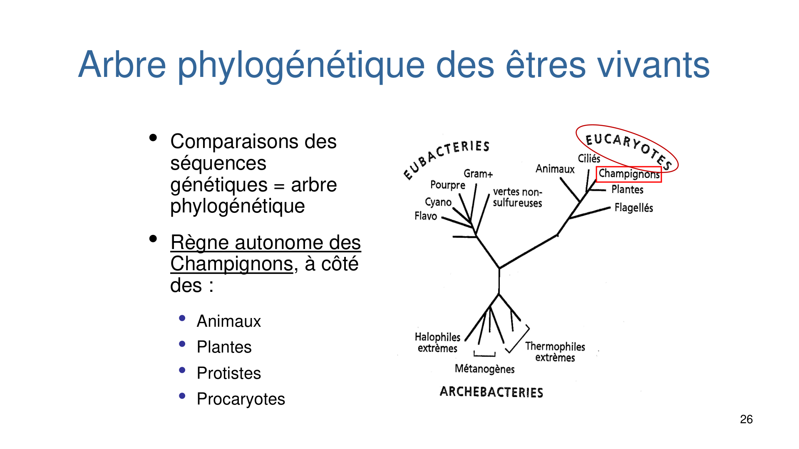
| Parasite | Localisation | Vecteur |
|---|---|---|
| Plasmodium | Hématies | Anophèle (moustique) |
| Leishmania | Macrophages | Phlébotome (moucheron) |
| Trypanosoma cruzi | Sang | Réduve (punaise) |
| Trypanosoma brucei | Sang | Glossine (mouche tsé-tsé) |
| Loa loa | Sang (larve), derme (adulte) | Chrysops (taon) |
| Filaires lymphatiques | Sang (larve), lymphe (adulte) | Culex (moustique) |
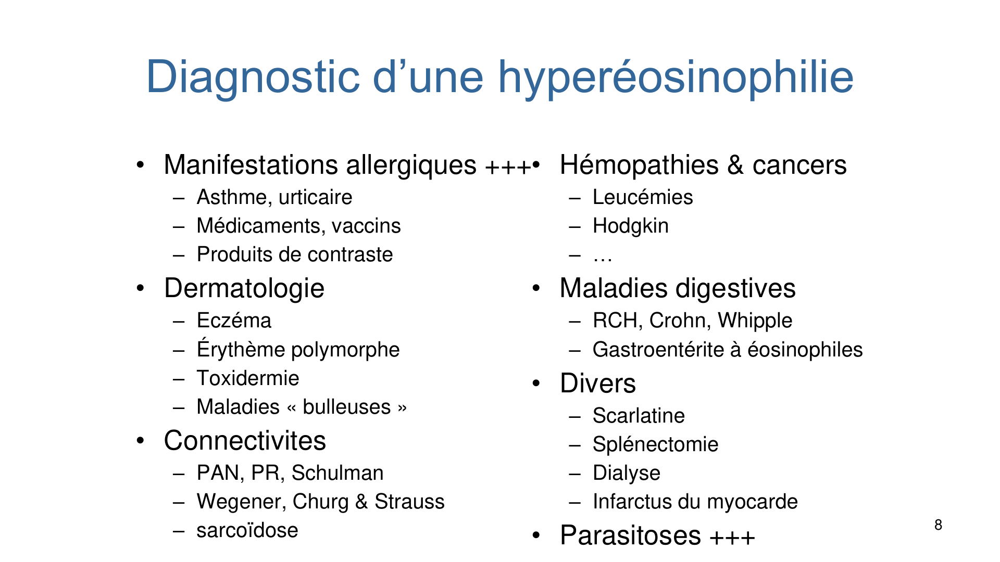
| Modérée (< 1500/mm³) → scotch-test anal + EPS (± sérologies) | Élevée (> 1500/mm³) → EPS + sérologies |
|---|---|
| Oxyure ; Taenia saginata ; échinococcose alvéolaire ; (kyste hydatique) ; (toxoplasmose) ; (hypodermose) | Trichinellose ; larva migrans viscérale (toxocarose, anisakiase) ; fasciolose ; fissuration de kyste hydatique |
| T1 | T2 | T3 | |
|---|---|---|---|
| Transmission | 15 % | 30 % | 60 % |
| Gravité | maximale | ↓ | minime |
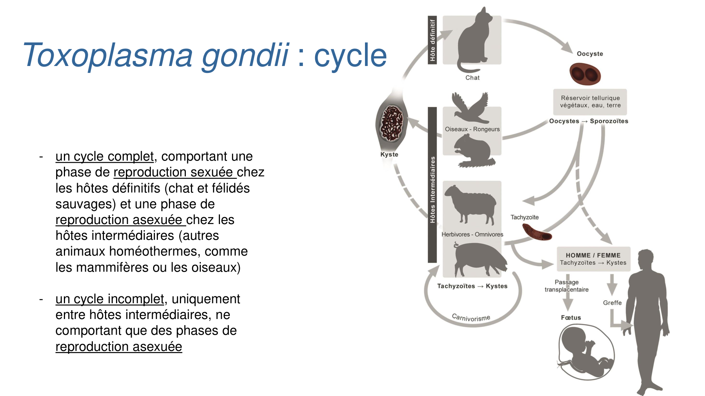
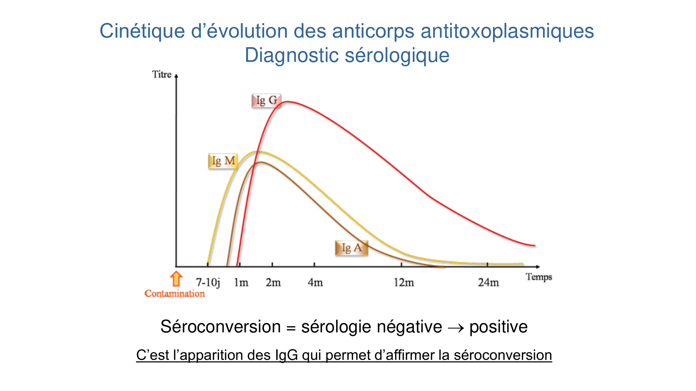
| Microsporidioses | Cryptosporidioses | Isosporose | Cyclosporose | Sarcocystose | |
|---|---|---|---|---|---|
| Répartition | cosmopolite | cosmopolite | tropical | tropical | cosmopolite |
| Terrain | ID | ID > IC | ID ≫ IC | ID ≫ IC | ID > IC |
| Cycle | monoxène | monoxène | monoxène | monoxène | hétéroxène |
| Forme infectante | spores direct. contaminantes | oocystes direct. contaminants | oocystes non direct. | oocystes non direct. | oocystes non direct. |
| Transmission | eau/aliments + interhumaine | eau/aliments + interhumaine | eau/aliments | eau/aliments | viande mal cuite |
| Diagnostic | EPS + coloration + PCR | EPS + coloration + PCR | EPS | EPS | EPS |
Les champignons forment un règne autonome (à côté des animaux, plantes, protistes, procaryotes).
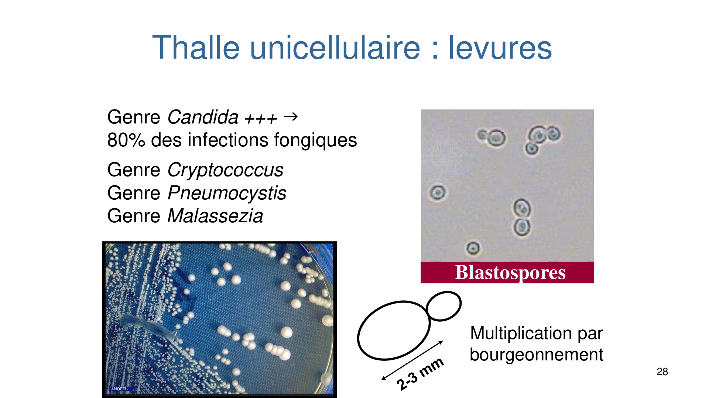
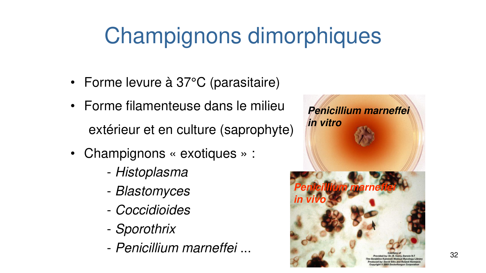
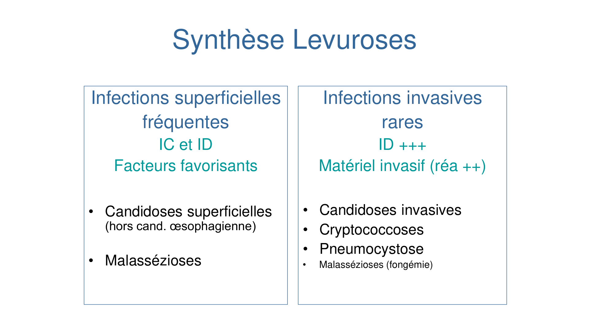
| Mycose | Agent / terrain | Clinique | Diagnostic clé |
|---|---|---|---|
| Candidoses superficielles (fréquentes) | Candida albicans ; IC & ID, facteurs favorisants | Intertrigo, onyxis/périonyxis, muguet/perlèche, vulvo-vaginite, balanite | Examen direct + culture |
| Candidoses invasives (rares, ID +++, matériel) | Candida ; mortalité ≈ 40 % | Candidémie (≥ 1 hémoc +) → chercher foyer profond (FO, écho cœur) ; profondes (1 site stérile) ; disséminées (≥ 2 sites) | Hémocultures ; y penser devant fièvre résistant aux ATB chez ID/réa |
| Malassézioses | Malassezia : levure lipophile commensale de la peau | Pityriasis versicolor (cou/tronc/dos, macules à limites nettes, squameuses au grattage, pas de prurit), dermite séborrhéique ; fongémies rarissimes (KT) | Scotch-test cutané (examen direct seul) |
| Cryptococcose | Cryptococcus, levure capsulée (sol, fientes d'oiseaux) ; opportuniste (SIDA +++) | Méningo-encéphalite +++ insidieuse ; pneumopathie ; cutanée ; généralisée. Voie aérienne ≫ cutanée | LCR en urgence ; antigène capsulaire (sérum +++ / LCR) |
| Pneumocystose | Pneumocystis jirovecii (champignon, culture impossible) ; opportuniste (VIH : CD4 < 200) | Pneumopathie progressive : toux sèche, fièvre, dyspnée croissante (plus brutale chez autres ID) | LBA + colorations (Gomori, IFI, Giemsa) ; PCR ; BDG sérique (négatif → exclut, VPN ≈ 100 %) |
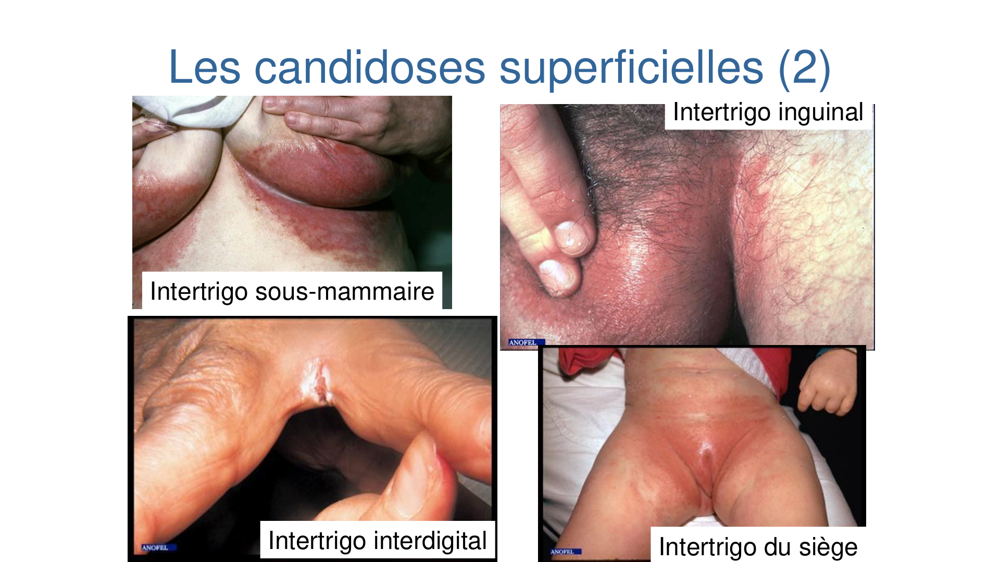
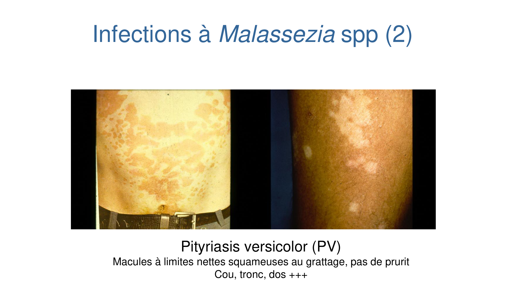
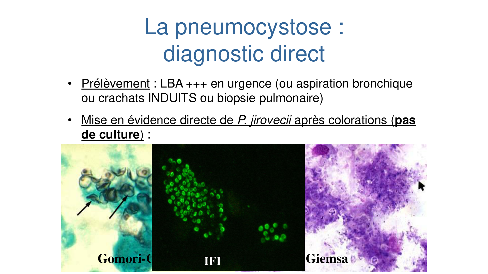
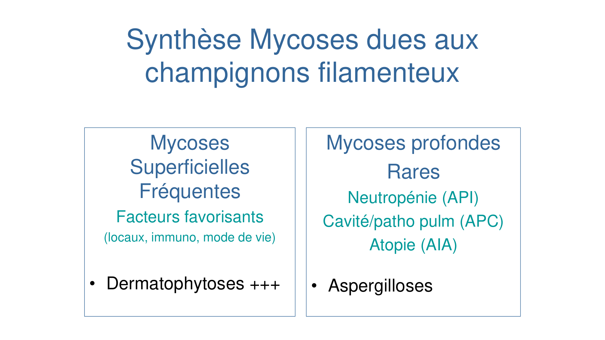
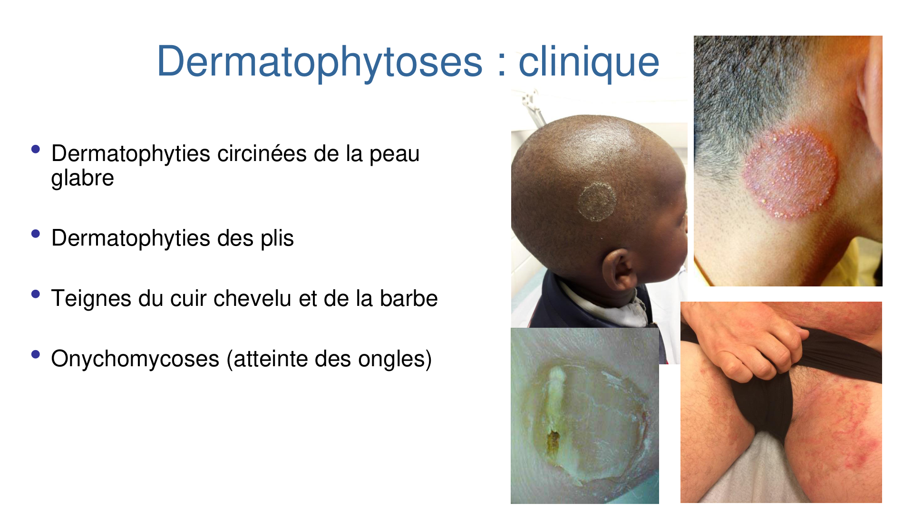
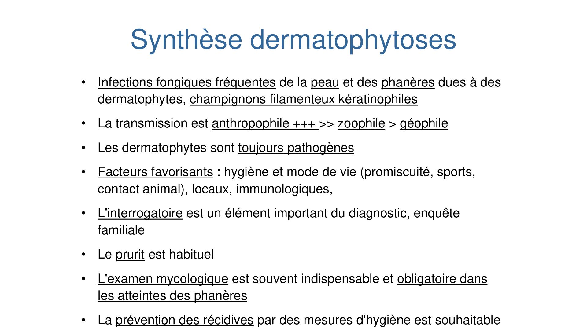
| Forme | Terrain | Clé |
|---|---|---|
| APC (chronique) — aspergillome | Cavité pulmonaire préformée et aérée | Truffe aspergillaire → image en grelot (TDM) |
| API (invasive) | ID, neutropénie +++ | Dissémination, mortalité > 60 % ; signe du halo ; galactomannane + PCR |
| AIA (immunoallergique) | Asthme, atopie, mucoviscidose, profession | Pneumopathie d'hypersensibilité ; sérologie (Ac) |
| Extra-pulmonaires | — | Otites (A. niger), sinusites, kératites, cutanées (brûlés) |
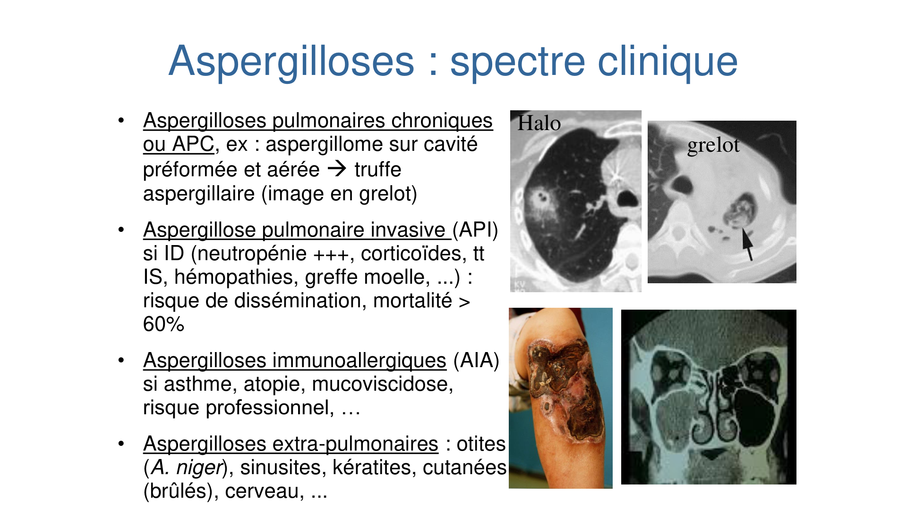
| Classe | Cible | Mécanisme |
|---|---|---|
| Échinocandines | Paroi | Inhibition de la synthèse des β-1,3 glucanes |
| Azolés, Allylamines | Membrane | Inhibition de la synthèse de l'ergostérol |
| Polyènes (amphotéricine B) | Membrane | Altération directe de la membrane |
| 5-fluorocytosine | Noyau | Altération biosynthèse ADN/ARN et protéines |
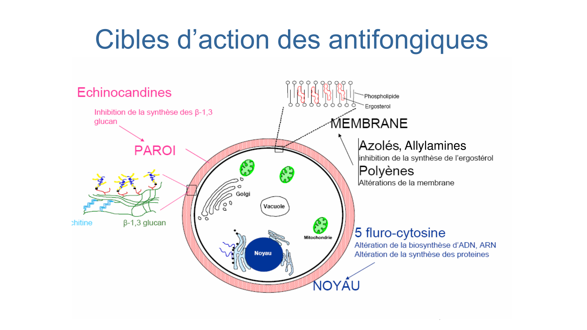
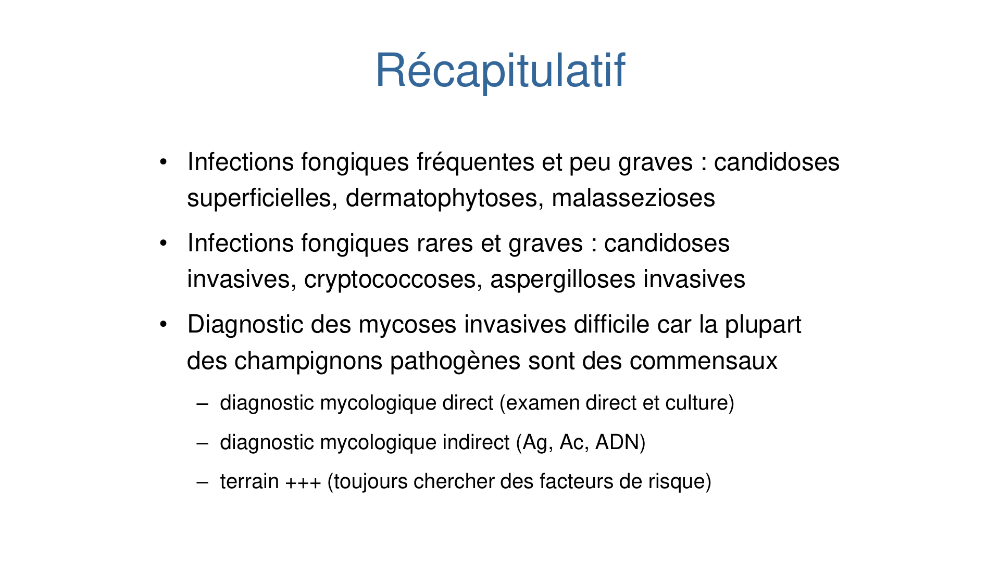